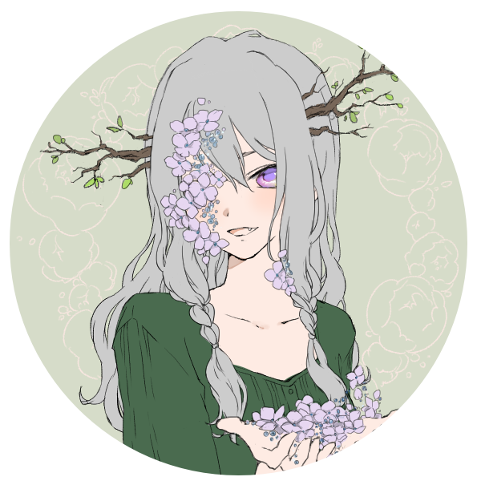

About Me
Thank you so much for visiting my website! I'm BittyBatty, and I have too many projects going at any one time as you can see by my navigation menu. I'm an aspiring wildlife biologist, though, who also has a passion for the arts. I have an AS - Biology and am currently working on my BS - Wildlife Biology so my days are really busy. However, I still find plenty of time to write and draw and even do a little bit of coding.
I am currently working on book one of what is ending up being a series of vampire novels. I've been a little obsessed with vampires since I was a teenager, and my book has evolved and changed so much over the years since then. I have a wide cast of characters I enjoy talking about and who fill my book with life.
I draw my characters from my book fairly often. I used to draw strictly digitally, but the drawing class I took Spring 2022, I found a new love for traditional media. Alcohol markers and colored pencils are my tools of trade currently, and I have been enjoying experimenting with them to get the best out of them. I currently run an etsy shop where I sell prints of some of my animal pieces. I donate a modest amount of those sales to support wildlife conservation, so check it out for me!
I also dabble in a little bit of coding as yet another hobby of mine. Under the Ukagaka tab to the left, you'll find my three coding projects, all of which are related to my book series. Coding is my newest hobby, and I am still learning a lot about it, but enjoying the community I have found because of it.
If you ever want to chat, have a question about one of my characters, or the world they come from, feel free to talk to me! Or if you simply want to know about my dog or how I'm procrastinating currently, I'll happily talk about that, too!